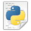

Links

Python is een open source object geörienteerde programmeertaal en wakkerde mijn interesse aan om aan deze opleiding te beginnen. Je vind heel wat informatie over Python op het internet en er zijn ook talloze fora waarbij andere Python-geïnteresseerden elkaar helpen.
- De officiële Python website
- Python Wikipedia pagina
- Codecamedy, een website waar je Python interactief kan proberen.
Is leren op het internet niets voor jou? Door persoonlijke ervaring weet ik dat het voor sommige personen vaak gemakkelijker is om te leren vanuit een boek. Aanrader is 'Learning Python' van Mark Lutz. Dit boek is een uitgebreide inleiding tot de Python programmeertaal, zelfs als je nog geen enkele voorkennis hebt van programmeren. Voor nog wat meer boeken kan je doorklikken op de volgende link, https://wiki.python.org/moin/IntroductoryBooks
De Raspberry Pi, een 'computer' die niet veel groter is dan een bankkaart, wordt momenteel in verschillende landen gebruikt om kinderen kennis te laten maken met informatica. Wordt standaard geleverd met het besturingssysteem Linux en de Python IDLE, maar je kan zelf een variant van Linux installeren. De Raspberry Pi kan ook voor andere doeleinden worden gebruikt, bv. als mailserver, fileserver, home theater PC en zelfs als gaming platform.